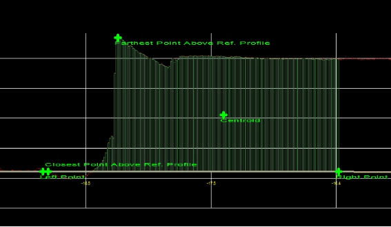
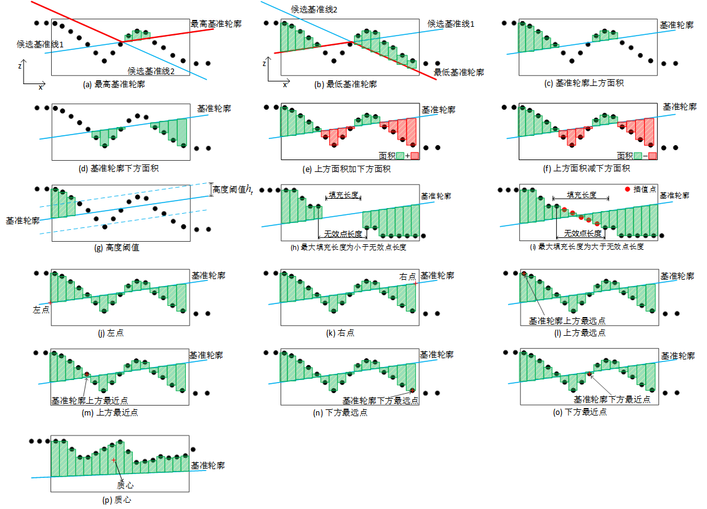

在3D测量中，轮廓面积工具主要是获取轮廓数据到基准轮廓的面积。图1所示为轮廓面积工具的效果图。

| 分类 | 参数名称 | 参数描述 |
|---|---|---|
| 属性窗口 | 定位跟随 | 选“是”，可以链接二维线性变换，ROI区域随二维线性变换变化。 |
| ROI类型 | 待检测区域，分为4种：整幅图像、矩形、仿射矩形、多仿射矩形。 | |
| 仿射矩形ROI个数 | 仅在ROI类型为多仿射矩形时有效，用于指定仿射矩形的个数，取值范围[2,10]。 | |
| 面积类型 | 分为4种：基准轮廓上方面积、基准轮廓下方面积、基准轮廓上方加下方面积、基准轮廓上方减下方面积。 |
|
| 基准轮廓类型 | 分为2中：从最高处创建、从最低处创建。 |
|
| 高度阈值 | 高度阈值为轮廓数据到基准轮廓竖直距离的阈值。只有到基准轮廓的竖直距离大于高度阈值的轮廓点才能参与面积的计算。 |
|
| 最大填充长度 | 可以对轮廓数据中的无效数据进行插值填充的最大长度。 | |
| 图像窗口 | 轮廓图像 | 显示待检测的轮廓图像。 |
| 检测区域 | 显示待检测区域。 | |
| 数据链 | 输入轮廓数据 | 输入待检测的轮廓图像的轮廓数据，该参数来源于截面生成工具的输出轮廓数据参数。 |
| 基准线 | 给定基准线，轮廓面积工具通过选择基准轮廓类型确定基准轮廓，该参数来自轮廓线圆拟合工具。 | |
| 高级界面 | 无 | 无 |
| 分类 | 参数名称 | 参数描述 |
|---|---|---|
| 监视窗口 | 输入轮廓数据 | 输入待检测的轮廓图像的轮廓数据，包括轮廓点数，有效点数。 |
| 面积 | 面积测量结果。 | |
| 质心 | 面积计算区域内所有面积的质心。 | |
| 轮廓上方最近点 | 位于面积计算区域内和基准轮廓上方，且距离基准轮廓最近的点。 | |
| 轮廓上方最远点 | 位于面积计算区域内和基准轮廓上方，且距离基准轮廓最远的点。 | |
| 轮廓下方最近点 | 位于面积计算区域内和基准轮廓下方，且距离基准轮廓最近的点。 | |
| 轮廓下方最远点 | 位于面积计算区域内和基准轮廓下方，且距离基准轮廓最远的点。 | |
| 左点 | 位于面积计算区域内的最左点。 | |
| 右点 | 位于面积计算区域内的最右点。 | |
| 执行结果 | 工具执行结果。 | |
| 执行时间 | 工具执行时间。 | |
| 图像窗口 | 轮廓图像 | 显示待检测的轮廓图像。 |
| 轮廓面积 | 显示轮廓面积测量结果。 | |
| 特征点 | 显示质心、轮廓上方最近点、轮廓上方最远点、轮廓下方最近点、轮廓下方最远点、左点、右点等特征点。 | |
| 数据链 | 同监视窗口参数，供后续工具使用。 |

Step 1 候选基准线获取
对于轮廓面积工具，首先需要对候选基准线进行获取，该参数通过参数链接从外部获取，其来源是轮廓线圆拟合工具。
Step 2 设置面积检测区域和参数
获取到候选基准线之后，需要对面积检测区域和参数进行设置。其中，面积的检测区域分为4种：整幅图像、矩形，仿射矩形，多仿射矩形（最多支持10个）。面积测量参数主要包括：基准轮廓，面积类型，高度阈值和最大填充长度等。其中，
基准轮廓类型
最高基准轮廓：多条候选基准线在Z方向的最大值所构成的基准轮廓，如图2(a)所示。
最低基准轮廓：多条候选基准线在Z方向的最小值所构成的基准轮廓，如图2(b)所示。
面积类型
基准轮廓上方面积：基准轮廓上方的轮廓数据与基准轮廓构成的面积，如图2©所示。
基准轮廓下方面积：基准轮廓下方的轮廓数据与基准轮廓构成的面积，如图2(d)所示。
基准轮廓上方面积加下方面积：基准轮廓上方面积与基准轮廓下方面积之和，如图2(e)所示。
基准轮廓上方面积减下方面积：三基准轮廓上方面积减去基准轮廓下方面积，如图2(f)所示。
高度阈值
最大填充长度
Step 3 执行测量和输出结果
完成上述步骤后，就可以执行面积测量了。输出的结果将包括面积测量的结果和面积的特征点（如果存在）。
左点：面积计算区域内的最左点，如图2(j)所示。水平方向上位于左点和右点之间的轮廓点才能参与面积的计算。
右点：面积计算区域内的最右点，如图2(k)所示。水平方向上位于左点和右点之间的轮廓点才能参与面积的计算。
基准轮廓上方最远点：位于面积计算区域内和基准轮廓上方，且距离基准轮廓最远的点，如图2(l)所示。
基准轮廓上方最近点：位于面积计算区域内和基准轮廓上方，且距离基准轮廓最近的点，如图2(m)所示。
基准轮廓下方最远点：位于面积计算区域内和基准轮廓下方，且距离基准轮廓最远的点，如图2(n)所示。
基准轮廓下方最近点：位于面积计算区域内和基准轮廓下方，且距离基准轮廓最近的点，如图2(o)所示。
质心：面积计算区域内所有面积的质心，如图2(p)所示。
无
参见“\Samples\3D\深度图\3D测量工具.gvp”。